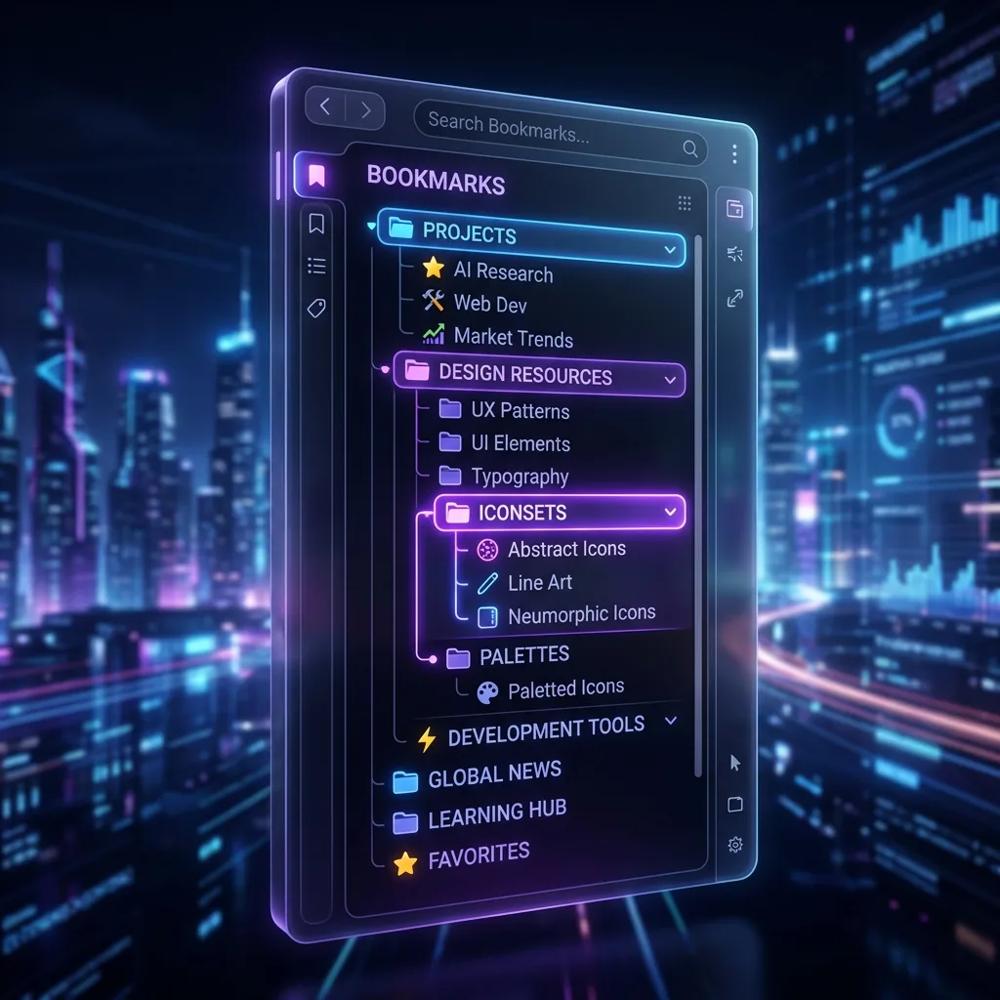

Chromeのブックマークを効率的に整理するには、フォルダを「仕事」「趣味」「学習」など大カテゴリで作成し、ブックマークマネージャー（Ctrl+Shift+O）でドラッグ＆ドロップ整理するのが基本です。ただ、ブックマークが増えるほど「どこに入れたか」を覚えておくのが負担になるため、細かく分けるより、表記が違っても探せるようにしておくことをおすすめします。LB TAB Layersでは、タブをグループに保存するとそのままChromeのブックマークとして残り、ひらがなとカタカナを区別しない検索で見つけられます。
「後で読む」でブックマークに保存。気づけばブックマークが数百個。フォルダを作っても、どこに入れたか思い出せない——。
この記事では、フォルダ管理の限界と、細かく分けるより探せるようにしておくための整理術（検索・タグ・★ランク）を紹介します。
フォルダ管理の3つの限界
1. 分類に迷う問題
「このサイトは『仕事』？『勉強』？『参考資料』？」——1つのブックマークを複数カテゴリに入れたいとき、フォルダでは1つしか選べません。
2. 階層が深くなる問題
きちんと分類しようとすると「仕事 → プロジェクトA → 参考資料 → デザイン」のように階層が深くなり、たどり着くのに何クリックも必要になります。
3. 探せなくなる問題
ブックマークが100個を超えると、フォルダを開いても「この中にあったはず…」とスクロールして探す羽目に。結局Googleで再検索する方が早い、という皮肉な状況に。
試しに、Chromeのブックマークマネージャー（Ctrl+Shift+O）を開いて、カタカナの名前で保存したページを、ひらがなで検索してみてください。たとえば「スプレッドシート」を「すぷれっどしーと」で。2026年10月に手元のChrome（バージョン154）で試したところ、見つかりませんでした。フォルダを細かくしても、検索が保存したときの表記どおりにしか当たらない限り、「どこに入れたか」を覚えておく負担は消えません。必要なのは、きれいに分けることより、表記が違っても探せるようにしておくことです。
次世代のブックマーク整理：3つのアプローチ
検索ファースト — フォルダを開かない
ひらがな・カタカナ・半角カナを区別しない検索なら、「すぷれっどしーと」と打っても「スプレッドシート」に当たります。LB TAB Layersでは、保存したタブをこの方法で探せるうえ、「めーる」でGmailが見つかるような、約1,000語の呼び名の辞書も使います（読みを漢字に変換するわけではないので、「がいよう」で「概要」は見つかりません）。どのフォルダに入れたかを思い出せなくても、フォルダを開かずに探せます。
タグで横断分類 — 1つのブックマークに複数ラベル
フォルダが「縦の分類」なら、タグは「横断の分類」。1つのブックマークに「#仕事」「#デザイン」「#参考」と複数タグをつけられます。
★ランクで重要度管理
★1〜5で重要度をつければ、「★5だけ表示」で本当に大事なブックマークがすぐ見つかります。
「どこに入れたか覚えていられない」という方には、LB TAB Layers がお役に立てるかもしれません。タブをグループに保存すると、そのままグループ名のフォルダに入ったChromeのブックマークとして残ります。無料版でも、保存したタブを、ひらがな・カタカナの違いを気にせず検索したり、グループやタブに★ランクをつけたりできます。インストール前からあるブックマークもまとめて探したいときはダッシュボード（Chromeのブックマーク全体を同じ検索で探せます）、フォルダをまたいで分けたいときはタグ、言葉が思い出せないときはAI検索（保存したタブのタイトル・URL・グループ名から、関連しそうなものを3〜5件挙げます。Gemini・OpenAI・Claude いずれかのAPIキーが必要）が役立ちます。この3つはPRO版の機能で、インストールから90日間の無料トライアル中は無料で使えます。
▶ 実際の操作を動画で見る
サイドバーで、ブックマークとタブをいっしょに管理する様子です。